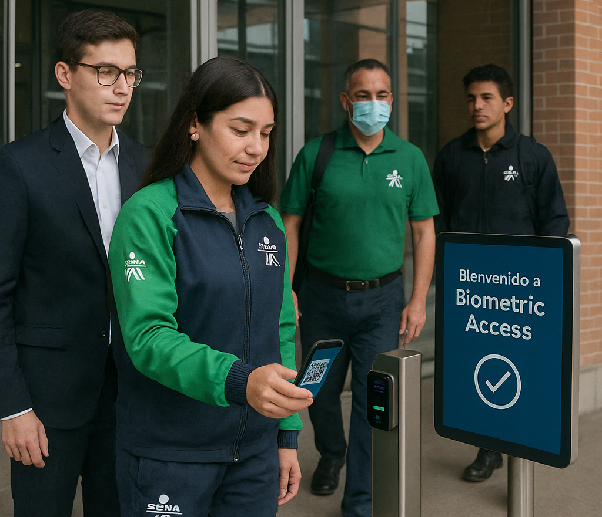

Bienvenido a Biometric Access
Soluciones modernas para el control seguro de acceso. Explora nuestras secciones para más información.
Biometric Access es una solución tecnológica desarrollada para agilizar y optimizar el ingreso de aprendices, instructores y personal administrativo al Centro de Servicios Financieros del SENA en Bogotá.
Nuestro sistema está diseñado para garantizar seguridad, fluidez y control eficiente en los puntos de acceso, integrando tecnologías como códigos QR, validación NFC y registro digital de dispositivos personales y vehículos.
¡Entrar nunca fue tan rápido, seguro y automatizado!
